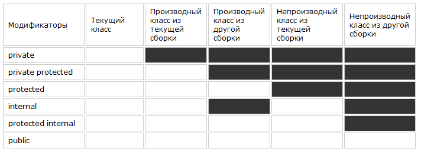

Все поля, методы и остальные компоненты класса имеют модификаторы доступа. Модификаторы доступа позволяют задать допустимую область видимости для компонентов класса. То есть модификаторы доступа определяют контекст, в котором можно употреблять данную переменную или метод.
В языке C# применяются следующие модификаторы доступа:
private: закрытый или приватный компонент класса или структуры. Приватный компонент доступен только в рамках своего класса или структуры.
private protected: компонент класса доступен из любого места в своем классе или в производных классах, которые определены в той же сборке.
protected: такой компонент класса доступен из любого места в своем классе или в производных классах. При этом производные классы могут располагаться в других сборках.
internal: компоненты класса или структуры доступен из любого места кода в той же сборке, однако он недоступен для других программ и сборок.
protected internal: совмещает функционал двух модификаторов protected и internal. Такой компонент класса доступен из любого места в текущей сборке и из производных классов, которые могут располагаться в других сборках.
public: публичный, общедоступный компонент класса или структуры. Такой компонент доступен из любого места в коде, а также из других программ и сборок.

Модификаторы доступа public,
protected, internal, private в
языке программирования C# и в .NET
Стоит отметить, что эти модификаторы могут применяться как к
компонентам класса, так и к компонентам структуры за тем
исключением, что структуры не могут использовать модификаторы
private protected, protected и protected internal, поскольку
структуры не могут быть унаследованы.
Все классы и структуры, определенные напрямую вне других типов (классов и структур) могут иметь только модификаторы public или internal.
Мы можем явно задать модификатор доступа, а можем его и не указывать:
public class Person
{
string name;
public Person(string name)
{
this.name = name;
}
public void Print() => Console.WriteLine($"Name: {name}");
}
Если для компонентов не определен модификатор доступа, то по
умолчанию для них применяется модификатор private. Например, в
примере выше переменная name неявно будет иметь модификатор
private.
Классы и структуры, которые объявлены без модификатора и которые расположены вне других типов, по умолчанию имеют доступ internal, а вложенные классы и структуры, как и остальные компоненты классов/структур имеют модификатор private. Например:
class Phone
{
struct Camera
{
}
}
Здесь класс Phone не является вложенным ни в один другой
класс/структуру, поэтому неявно имеет модификатор internal. А
структура Camera является вложенной, поэтому, как и другие
компоненты класса, неявно имеет модификатор private
Модификаторы в рамках текущего проекта
Посмотрим на примере и создадим следующий класс State:
class State
{
// все равно, что private string defaultVar;
string defaultVar ="default";
// поле доступно только из текущего класса
private string privateVar = "private";
// доступно из текущего класса и производных классов, которые
определены в этом же проекте
protected private string protectedPrivateVar = "protected
private";
// доступно из текущего класса и производных классов
protected string protectedVar = "protected";
// доступно в любом месте текущего проекта
internal string internalVar = "internal";
// доступно в любом месте текущего проекта и из
классов-наследников в других проектах
protected internal string protectedInternalVar = "protected
internal";
// доступно в любом месте программы, а также для других программ
и сборок
public string publicVar = "public";
// по умолчанию имеет модификатор private
void Print() => Console.WriteLine(defaultVar);
// метод доступен только из текущего класса
private void PrintPrivate() => Console.WriteLine(privateVar);
// доступен из текущего класса и производных классов, которые
определены в этом же проекте
protected private void PrintProtectedPrivate() =>
Console.WriteLine(protectedPrivateVar);
// доступен из текущего класса и производных классов
protected void PrintProtected() =>
Console.WriteLine(protectedVar);
// доступен в любом месте текущего проекта
internal void PrintInternal() => Console.WriteLine(internalVar);
// доступен в любом месте текущего проекта и из
классов-наследников в других проектах
protected internal void PrintProtectedInternal() =>
Console.WriteLine(protectedInternalVar);
// доступен в любом месте программы, а также для других программ
и сборок
public void PrintPublic() => Console.WriteLine(publicVar);
}
Так как класс State не имеет явного модификатора, по умолчанию
он имеет модификатор internal, поэтому он будет доступен из
любого места данного проекта, однако не будет доступен из других
программ и сборок.
Класс State имеет шесть полей для каждого уровня доступа. Плюс одна переменная без модификатора, которая является закрытой (private) по умолчанию. А также определено семь методов с разными модификаторами, которые выводят значения соответствующих переменных на консоль. Поскольку все модификаторы позволяют использовать компоненты класса внутри данного класса, то и все переменные класса, в том числе закрытые, у нас доступны всем его методам, так как все находятся в контексте класса State.
Теперь посмотрим, как мы сможем использовать переменные класса State в другом классе, который, допустим, будет называться StateConsumer и который расположен в том же проекте:
class StateConsumer
{
public void PrintState()
{
State state = new State();
// обратиться к переменной defaultVar у нас не получится,
// так как она имеет модификатор private и класс StateConsumer
ее не видит
Console.WriteLine(state.defaultVar); //Ошибка, получить доступ
нельзя
// то же самое относится и к переменной privateVar
Console.WriteLine(state.privateVar); // Ошибка, получить доступ
нельзя
// обратиться к переменной protectedPrivateVar не получится,
// так как класс StateConsumer не является классом-наследником
класса State
Console.WriteLine(state.protectedPrivateVar); // Ошибка,
получить доступ нельзя
// обратиться к переменной protectedVar тоже не получится,
// так как класс StateConsumer не является классом-наследником
класса State
Console.WriteLine(state.protectedVar); // Ошибка, получить
доступ нельзя
// переменная internalVar с модификатором internal доступна из
любого места текущего проекта
// поэтому спокойно присваиваем ей значение
Console.WriteLine(state.internalVar);
// переменная protectedInternalVar так же доступна из любого
места текущего проекта
Console.WriteLine(state.protectedInternalVar);
// переменная publicVar общедоступна
Console.WriteLine(state.publicVar);
}
}
Таким образом, в классе StateConsumer мы смогли только
обратиться к переменным internalVar, protectedInternalVar и
publicVar, так как их модификаторы позволяют использовать в
данном контексте.
Аналогично дело обстоит и с методами:
class StateConsumer
{
public void PrintState()
{
State state = new State();
state.Print(); //Ошибка, получить доступ нельзя
state.PrintPrivate(); // Ошибка, получить доступ нельзя
state.PrintProtectedPrivate(); // Ошибка, получить доступ нельзя
state.PrintProtected(); // Ошибка, получить доступ нельзя
state.PrintInternal(); // норм
state.PrintProtectedInternal(); // норм
state.PrintPublic(); // норм
}
}
Здесь нам оказались доступны только три метода: PrintInternal,
PrintProtectedInternal, PrintPublic, которые имееют
соответственно модификаторы internal, protected internal,
public.
Модификаторы в рамках сборок
Допустим, у нас есть проект (и соответственно сборка) MyLib, в
которой определены три класса:
namespace MyLib;
// класс доступен из других сборок
public class PublicState
{
internal void PrintInternal() => Console.WriteLine("internal");
protected internal void PrintProtectedInternal() =>
Console.WriteLine("protected internal");
public void PrintPublic() => Console.WriteLine("public");
}
// класс доступен только в текущей сборке - по умолчанию
internal
class DefaultlState { }
// класс доступен только в текущей сборке
internal class InternalState{ }
Здесь классы DefaultlState и InternalState имеют модификатор
internal, поэтому доступны только в текущем проекте.
Класс PublicState модификатором public доступен из других проектов. Однако его методы PrintInternal() и PrintProtectedInternal() доступны только в текущем проекте. Вне текущего проекта доступен только его метод PrintPublic.
Допустим, мы подключаем сборку этого проекта MyLib в другой проект, где есть класс StateConsumer:
using MyLib;
class StateConsumer
{
public void PrintState()
{
// Ошибка DefaultState - по умолчанию internal, поэтому нет
доступа
DefaultState defaultState = new DefaultState();
// Ошибка InternalState - internal, поэтому нет доступа
InternalState internalState = new InternalState();
// норм, PublicState - public, доступен из других программ
PublicState publicState = new PublicState();
// Ошибка, нет доступа - метод доступен только в свой сборке
publicState.PrintInternal();
// Ошибка, нет доступа - метод доступен только в свой сборке
publicState.PrintProtectedInternal(); // нет доступа
// норм - общедоступный метод
publicState.PrintPublic(); // норм
}
}

Модификаторы доступа в языке программирования C# и в .NET
В классе StateConsumer есть доступ только к классу PublicState и
его методу PrintPublic, потому что они имеют модификатор public.
К остальной функциональности подключенной сборки StateConsumer
доступа не имеет.
Благодаря такой системе модификаторов доступа можно скрывать некоторые моменты реализации класса от других частей программы.